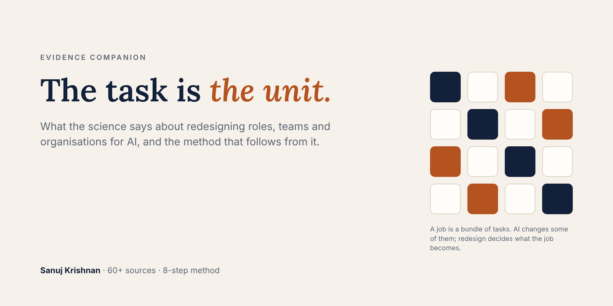
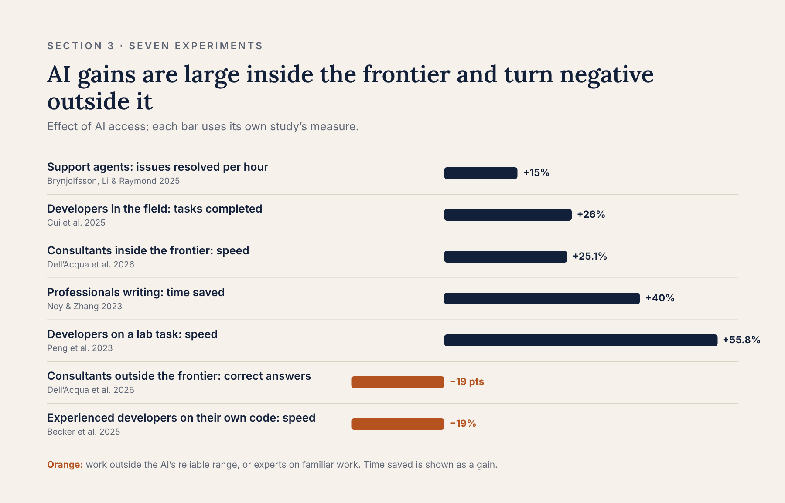
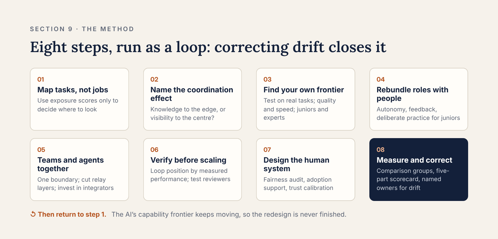

The Task Is the Unit: What the Science Says About Redesigning Work for AI
Sanuj Krishnan · November 2026 · The evidence companion to AI Didn’t Create a Productivity Problem. It Exposed a Redesign Problem.

Two ways to read this. The short, opinionated essay is in the essay (about 2,000 words). This document is the evidence behind it: what the research says about redesigning roles, teams and organisations for AI, an eight-step method that follows from it, and every source.
About the evidence. Every factual claim is sourced. Working papers and preprints are marked (WP). Where evidence is thin, the text says so. Inferences are labelled as inferences. The closing case is described at a level that protects the organisation involved.
Contents: 1. The gap · 2. Tasks · 3. Experiments · 4. Structure · 5. Roles and careers · 6. Quality and control · 7. The human system · 8. Measurement · 9. The method · 10. A case · 11. Open questions · References
1. The gap nobody budgets for
In controlled experiments, generative AI makes knowledge workers dramatically more productive. Customer-support agents resolved 15% more issues per hour (Brynjolfsson, Li & Raymond 2025). Professionals finished writing tasks in 40% less time, at 18% higher quality (Noy & Zhang 2023). Across three field experiments with nearly 5,000 developers, those given an AI assistant completed 26% more tasks (Cui et al. 2025).
Now look at the economy. Linking survey responses to Danish administrative records for 25,000 workers in the most exposed occupations, Humlum and Vestergaard (2025) found AI chatbots saved about 3% of working hours, and could rule out any effect on earnings above 1%.
Both findings are sound. The distance between them is the subject of this article.
Economists have a name for part of it. When a general-purpose technology arrives, firms must invest in things that never appear on a balance sheet: new processes, new skills, new roles. Measured productivity dips before it rises. Brynjolfsson, Rock and Syverson (2021) call this the productivity J-curve, and estimate that adjusting for these unmeasured investments would have put US productivity about 16% higher than official figures by 2017.
The practical reading is blunt. A tool raises output on a task. Only redesign raises output in an organisation. Handing out licences changes the first; it does not change the second.
This article sets out what the research says about that redesign: how AI changes tasks, teams, hierarchies, roles, quality control and the people inside them, and what method follows from the evidence. Every claim carries its source. Where the evidence is thin, I say so. The last part describes how we applied this method to an engineering organisation, including what went wrong.
2. The unit of change is the task, not the job
Labour economists stopped thinking about technology and jobs two decades ago. They think about technology and tasks. A job is a bundle of tasks. A technology changes the cost of doing some of those tasks, and the job changes shape around it.
The foundational evidence came from computerisation. Autor, Levy and Murnane (2003) showed that computers replaced routine tasks that follow explicit rules and complemented non-routine problem-solving and communication. Shifts in task content within the same job titles explained about 60% of the rising demand for college-educated labour between 1970 and 1998. The job titles stayed. The work inside them changed.
Acemoglu and Restrepo (2019) formalised the two forces at play. Automation displaces people from tasks they used to do. New technology also reinstates labour by creating tasks that did not exist before. Which force wins decides whether a technology raises or lowers demand for people. In their later work, tasks lost to automation accounted for 50–70% of the change in the US wage structure over four decades (Acemoglu & Restrepo 2022).
Three verbs follow, and they are the vocabulary of any redesign:
- Automate: the task moves from a person to the system.
- Augment: the person keeps the task and does it faster or better.
- Create: a new task appears, such as checking AI output or designing the workflow it runs in.
For generative AI today, the experimental evidence is dominated by augmentation. Pure automation of whole roles is still rare in the studies, and new task creation is real but poorly measured (more on this in sections 3 and 6).
What exposure scores can and cannot tell you
The best-known attempt to map generative AI onto tasks is Eloundou and colleagues' "GPTs are GPTs" (published in Science in 2024). They scored every task in the US occupational database for whether a language model could cut its time by half at the same quality. About 80% of US workers had at least 10% of their tasks exposed, and about 19% had at least half exposed. Other indices, such as Felten, Raj and Seamans' (2021) AI Occupational Exposure measure, use different methods and only partly agree.
Exposure scores are a useful first map. They are a poor guide to redesign on their own, for three reasons:
- They measure what is technically possible, not what is economic. They ignore integration cost, regulation and the redesign the J-curve demands.
- They miss the jagged frontier. Two tasks that look equally hard can fall on opposite sides of what a model can actually do (section 3).
- They cannot see new tasks. The verification and coordination work that AI creates does not appear in a list of existing tasks.
The implication is simple: start redesign at the task level, use exposure scores to decide where to look, and decide what to change from local evidence.
3. What the experiments actually show
The randomised and natural experiments on generative AI at work now form a consistent picture. It has four parts.
First, gains on well-defined tasks are large. Agents in a Fortune 500 software firm's support centre resolved 15% more issues per hour after an AI assistant was rolled out in stages (Brynjolfsson, Li & Raymond 2025; 5,172 agents). Professionals given ChatGPT finished writing tasks 40% faster with 18% higher quality (Noy & Zhang 2023; 453 participants). Developers given GitHub Copilot built a small web server 55.8% faster in a lab test (Peng et al. 2023). The field evidence is smaller but still substantial: 26% more completed tasks across three randomised experiments at Microsoft, Accenture and a Fortune 100 firm (Cui et al. 2025; 4,867 developers).
Second, the least experienced gain most. In the support centre, the newest and lowest-skilled agents improved by about 34%; the most experienced barely improved at all. In the writing study, lower performers gained more and the spread of quality narrowed. The mechanism, in Brynjolfsson and colleagues' reading, is that the AI captures the tacit know-how of top performers and hands it to everyone. This compression has a consequence for careers that section 5 takes up.
Third, the frontier is jagged. Dell'Acqua and colleagues ran a pre-registered experiment with 758 Boston Consulting Group consultants (published in Organization Science, 2026). On 18 realistic tasks inside GPT-4's capability, consultants with AI completed 12.2% more work, 25.1% faster, at more than 40% higher quality. On one task designed to sit just outside that capability, consultants with AI were 19 percentage points less likely to reach the correct answer than those without. The tasks looked similar in difficulty. The AI's output looked equally convincing on both. The boundary was invisible to the people using it.
Fourth, experts on familiar work can get slower. METR ran a randomised trial with 16 experienced open-source developers working on their own mature codebases, using early-2025 tools. With AI they took 19% longer. Before the study they had forecast a 24% speed-up; afterwards they still believed they had been 20% faster (Becker et al. 2025). The sample is small and the tools have improved since. But the gap between perceived and measured speed is the finding no leader should ignore.
Reading the four together
The positive and negative software results are not in conflict. Gains are largest where the AI supplies knowledge the person lacks and the output is easy to check. They shrink, or reverse, where the person already knows the system well and checking the AI's work costs more than doing it. That cost of checking is the hinge of the whole field, and it returns in section 6.
Two cautions apply to every number above. Most come from single tasks over hours or weeks, not from whole jobs over years. And all of them measure chat-style assistants; agentic systems that plan and act across many steps have barely been studied in the field (section 11).

The five gains come from tasks inside the AI's capability; the two losses come from work just outside it and from experts on systems they already know.
4. Structure follows coordination cost
Organisational structure exists to manage dependencies between tasks (Malone & Crowston 1994). Change the cost of managing those dependencies and structure shifts. Generative AI lowers two different costs at once, and they pull in opposite directions.
Bloom, Garicano, Sadun and Van Reenen (2014) showed this distinction with data from US and European manufacturers. Technologies that let front-line workers acquire knowledge (solve more problems themselves) pushed decisions down and widened spans of control. Technologies that made communication cheaper let the centre direct more, and pulled decisions up. Generative AI does both. Used as a front-line assistant, it behaves like the first kind: support agents asked managers to step in less often (Brynjolfsson, Li & Raymond 2025), and developers given Copilot shifted their time from project management toward coding (Hoffmann et al. 2024). Used as a reporting and monitoring layer, it behaves like the second.
So the first structural question about any AI deployment is which cost it mainly reduces: knowledge to the edge, or visibility to the centre.
Fewer layers, different managers
Garicano's (2000) model treats a firm as a hierarchy of problem-solvers. Routine problems are handled at the front line; exceptions travel up to people who know more. Make knowledge cheaper and fewer problems need to travel, so layers fall and spans widen. Firm data mostly fit this: companies that invested in AI became flatter (Babina et al. 2023; Ewens & Giroud 2025).
But the same period shows AI-adopting firms posting more managerial vacancies, not fewer, across 375 million US job postings. What changed was the content: less budgeting, planning and staff administration; more stakeholder management, coordination and growth (Alekseeva et al. 2026). The best reading of the evidence is that AI removes managers whose job is relaying information, and raises demand for managers who integrate work and develop people.
That second kind is not a luxury. Replacing a bottom-10% manager with a top-10% one raised a team's output about as much as adding a worker to a nine-person team (Lazear, Shaw & Stanton 2015), and managers' people skills measurably reduce attrition (Hoffman & Tadelis 2021). Earlier waves of delayering, sold as empowerment, often concentrated decisions at the top instead (Wulf 2012).
One person with AI can replace a small team, sometimes
In a pre-registered experiment with 776 professionals at Procter & Gamble, individuals working with AI improved the quality of product-innovation solutions by 0.37 standard deviations, slightly more than two-person teams without AI (0.24). Teams with AI did best, and were about three times more likely to produce top-decile ideas (Dell'Acqua et al. 2025). AI also erased the usual gap between technical and commercial thinking: a person's function no longer predicted the kind of solution they produced.
The wider evidence is more sobering. Across 106 experiments, human–AI pairs did better than humans alone but worse than the better of the human or the AI working separately (Vaccaro, Almaatouq & Malone 2024). Pairs lost most on decision tasks and gained on creation tasks. Combination helped when the human was better than the AI at the task, and hurt when the AI was better.
Conway's law applies to agents
Conway (1968) observed that systems mirror the communication structure of the organisations that build them. A review of 142 studies finds the pattern common but breakable through deliberate design (Colfer & Baldwin 2016). Multi-agent AI systems fail for organisational reasons: poorly specified roles, misaligned agents and weak verification (Cemri et al. 2025). The practical consequence is direct. If a function such as QA or UX sits outside a team in the org chart, the agent workflow will route around it, and the work will drift back across that boundary. There is no causal evidence yet on the right size or shape of a human-plus-agent team.
5. Redesigning roles and careers
If the task is the unit, role redesign is a three-step craft: decompose each role into its tasks, decide for each task whether to automate, augment or keep it human, and rebundle what remains into roles people can do well and want to do.
The rebundling step has the strongest research base. Work-design research, synthesised by Parker (2014), finds that autonomy, variety and feedback predict performance, wellbeing and learning across hundreds of studies. Job crafting research shows that people who reshape their own tasks and relationships find more meaning in the work (Wrzesniewski & Dutton 2001). Both point the same way: roles redesigned with the people in them hold up better than roles redesigned for them. Both also carry a warning. Unstructured crafting can produce roles that duplicate each other or drop work the organisation needs.
The junior pipeline is the first casualty
The clearest labour-market signal of generative AI so far falls on early-career workers. Using monthly payroll data from ADP covering millions of US workers, Brynjolfsson, Chandar and Chen find that employment of 22–25-year-olds in the most AI-exposed occupations now stands 19% below where it would be had it kept pace with less-exposed peers (August 2026 version, covering November 2022 to June 2026). Older workers in the same occupations did not decline. The effect is concentrated where AI automates tasks rather than augments them, and it runs through reduced hiring, not layoffs. The study is observational and still a working paper; other forces in the tech labour market may contribute.
The mechanism matters more than the number. Expertise is built through deliberate practice with feedback (Ericsson, Krampe & Tesch-Römer 1993) and through apprenticeship, where newcomers learn by doing the peripheral work of a practice before they move to its core (Lave & Wenger 1991). The tasks AI absorbs first, such as first drafts, routine fixes and simple analysis, are exactly that peripheral work. Section 3 showed AI lifts novices most. The danger is that it lifts their output while removing the practice that would have made them experts.
Deskilling is measurable
The best real-world evidence comes from medicine. Nineteen experienced endoscopists in Poland, each with more than 2,000 procedures behind them, worked with an AI detection aid for several months. When they then worked without it, their adenoma detection rate fell from 28.4% to 22.4% (Budzyń et al. 2025, Lancet Gastroenterology & Hepatology). The study is observational, not randomised, but the direction is what Bainbridge (1983) predicted four decades ago: skills not practised decay.
In knowledge work, a survey of 319 professionals found that the more people trusted generative AI, the less critical thinking they reported applying, while the more they trusted their own ability, the more they applied (Lee et al. 2025). Their effort shifted from producing work to verifying, integrating and stewarding it.
That shift tells us which skills rise in value: framing the problem, judging output, handling exceptions, and holding enough domain depth to know when the AI is wrong.
Ladders, levels and attribution
When AI assists individual output, volume measures such as lines of code, tickets closed or documents produced stop measuring the person. No study has yet tested a redesigned career ladder for AI-assisted work, so what follows is inference from work-design research and the evidence above. Levelling criteria should weight judgement, verification quality, exception handling and the development of others. Contribution needs an honest account of what was generated, what was checked and what was decided by whom.
On skills-based organisations, the evidence is advocacy, not science. Vendor surveys report strong executive interest, but no rigorous study compares skills-based and job-based models on business outcomes. A skills layer on top of jobs is defensible for workforce planning. Replacing jobs with skills is a bet, not an evidence-based practice.
6. Quality and control: verification is the new bottleneck
In 1983 Lisanne Bainbridge described the ironies of automation. Automation takes over the easy parts of a job and leaves people the hard, rare exceptions. It removes the practice that keeps their skills sharp. Then it relies on those same out-of-practice people to monitor it and step in when it fails, and people monitor poorly over long periods. Human-factors research confirmed that operators taken out of the loop notice failures later and recover worse (Endsley & Kiris 1995).
Each irony has a direct analogue in AI-assisted knowledge work: juniors lose the routine work that built expertise, reviewers face high volumes of fluent output, and the work escalated to people is the hardest residue.
Automation bias reaches experts
People tend to follow automated advice even when it is wrong. This is among the best-replicated findings in human factors (Skitka, Mosier & Burdick 1999; Goddard, Roudsari & Wyatt 2012). Expertise does not protect against it. When a purported AI suggested wrong categories for mammograms, accuracy fell from 80% to 20% for inexperienced radiologists and from 82% to 46% for very experienced ones (Dratsch et al. 2023). Developers with an AI assistant wrote less secure code and were more confident it was secure (Perry et al. 2023).
The opposite error exists too. In a pre-registered experiment with 227 radiologists, doctors under-weighted correct AI predictions, so AI assistance did not improve their average accuracy (Agarwal et al. 2023). And physicians working with GPT-4 did no better on diagnostic reasoning than physicians alone, while GPT-4 on its own scored higher (Goh et al. 2024). People defer to AI when they should not, and dismiss it when they should not.
The fixes that sound obvious work poorly. AI explanations increased acceptance of AI advice whether it was right or wrong (Bansal et al. 2021). What does reduce over-reliance is cognitive forcing: asking people to commit to their own answer before seeing the AI's. People dislike it, and it helps most those who enjoy effortful thinking (Buçinca, Malaya & Gajos 2021).
The cost of checking
AI cuts the cost of producing work far more than the cost of checking it. The evidence for this comes from three directions:
- Workers: in Denmark, AI created new tasks for 8.4% of workers, including checking its output, while saving about 3% of hours (Humlum & Vestergaard 2025).
- Software delivery: Google's DORA programme found that a 25% rise in AI adoption went with 7.2% lower delivery stability in its 2024 survey of about 39,000 professionals. This is a vendor-run survey, so treat it as context, not proof.
- Experts: METR's developers were slower largely because prompting, waiting for and reviewing output cost more time than it saved; they accepted fewer than 44% of the AI's suggestions (Becker et al. 2025).
No study yet measures what share of AI gains verification consumes in a real enterprise. The arithmetic is still clear: net gain equals time saved in production, minus review time, rework and the cost of defects that escape. That makes verification design the main lever on net productivity.
Why processes slide back
A routine has two sides: the written pattern, and what people actually do on a given day (Feldman & Pentland 2003). Changing the first does not change the second. The same scanner produced different working structures in two hospitals, depending on how people enacted it (Barley 1986). In 16 hospitals adopting a new cardiac surgery technique, the teams that made it stick had leaders who framed it as a learning challenge and built psychological safety; the others reverted (Edmondson, Bohmer & Pisano 2001). Under delivery pressure, managers choose "work harder" over "work smarter", capability erodes, and the failure is then blamed on the workers (Repenning & Sterman 2002).
Together these predict three things about any AI redesign. Drift back to old routines is the default. It shows first in the most person-dependent steps. And correcting it depends on local leaders more than on dashboards.
Who should be in the loop
The evidence supports deciding human involvement task by task, from measured performance rather than habit:
| Condition | Design the evidence supports |
|---|---|
| AI clearly outperforms people; errors recoverable, feedback fast | AI decides routine cases; people audit samples and outcomes |
| People outperform AI, or hold context it lacks | Person decides; AI is an input, after the person's own first judgement |
| Competence varies case by case | AI triages and hands hard cases to people, not the reverse (Fügener et al. 2022) |
| High stakes, irreversible or regulated | Person decides, with accountability, logged overrides and a test of whether review catches errors |
The last row matters most, because a review requirement on its own often catches little and creates false comfort (Green 2022). The table is a synthesis of several studies (Vaccaro et al. 2024; Agarwal et al. 2023; Kahneman & Klein 2009), not a tested protocol.
7. The human system
A redesign changes what people do, and it also changes who they are at work. The research on how people experience technological change is older than generative AI and well replicated. It applies directly.
Technostress is real and measurable. Information-systems research identified five sources of technology-related stress: overload, invasion of personal time, complexity, insecurity and uncertainty, and showed they reduce productivity and job satisfaction (Tarafdar et al. 2007). Early studies of generative AI find the same pattern, with an added threat to professional self-esteem when AI performs the tasks at the centre of a person's identity, such as coding for engineers or diagnosis for doctors. Those AI-specific studies are recent and mostly surveys; the underlying mechanism is not in doubt.
Adoption depends on support more than enthusiasm. The Unified Theory of Acceptance and Use of Technology combined eight earlier models and explained about 70% of the variation in people's intention to use a new system (Venkatesh et al. 2003). Four things drive it: whether people expect it to help, whether it is easy, whether people around them use it, and whether the organisation provides the conditions to use it well. The last of these, time, training and support, is what turns intention into sustained use.
Trust has to be calibrated, not maximised. Lee and See (2004) define good trust in automation as trust that matches what the system can actually do, and that can tell when it works and when it does not. Too much trust produces the automation bias in section 6. Too little produces disuse. Calibration is built through direct experience with feedback on when the AI was right or wrong, which is why showing people AI failures early is more useful than showing them demos.
Fairness decides acceptance
One of the most replicated findings in organisational psychology is that people judge change by the fairness of the process, not only by its outcome. A meta-analysis of 183 studies found four forms of fairness each independently predicted trust, commitment and performance: fair distribution of outcomes, a fair process, respectful treatment, and honest, timely explanation (Colquitt et al. 2001). A fair process means people affected have a voice, criteria are consistent, bias is suppressed and decisions can be corrected. It softens even unfavourable outcomes, though it does not remove their sting.
The people who stay
Restructuring affects those who keep their jobs as well as those who lose them. Research on downsizing since the 1990s documents "survivor" effects: lower trust, less commitment, more risk aversion and higher intention to leave (Noer 1993; Cascio 1993). The strength of these effects depends heavily on how fairly the process is seen to have been run.
On redeployment, the honest position is that the evidence is thin. There is no rigorous comparison of redeployment against redundancy, and no reliable published benchmark for redeployment success rates. What predicts success has to be inferred from the fairness and work-design literatures: voice in the move, real skill-building, and a credible new career path.
8. Measuring whether it worked
Most organisations cannot say whether their AI redesign worked, because they changed many things at once and measured the wrong ones. Three disciplines fix this.
Measure outcomes, not activity. In software, the DORA measures of delivery speed and stability (how often teams deploy, how long changes take, how often they fail, how fast service recovers) have the strongest research base (Forsgren, Humble & Kim 2018). The SPACE framework adds satisfaction, collaboration and efficiency so no single number dominates (Forsgren et al. 2021). Section 6 adds one more that AI makes essential: the rate at which defects escape review.
Expect Goodhart's law. When a measure becomes a target, it stops being a good measure (Strathern 1997, restating Goodhart). AI makes activity metrics trivially easy to inflate: more lines of code, more tickets split into smaller tickets, more documents. METR's developers believed they were 20% faster while measured as 19% slower; self-reported speed is the most easily inflated metric of all.
Design for attribution before rollout. To separate the effect of AI from everything else changing at the same time, firms can use the same designs economists use: staggered rollout across teams, holdout groups that keep the old process for a defined period, and comparison of the change in treated teams against the change in untreated ones. The support-centre study above is exactly this design (Brynjolfsson, Li & Raymond 2025). A team's comparison against its own past performance is useful, but it cannot rule out other causes.
A balanced scorecard
Optimising for cost or speed alone degrades quality and drives out the people who carry the organisation's knowledge. The scorecard needs five dimensions together: cost, speed, quality (including escaped defects), retention of critical talent, and employee experience. The research does not yet tell us which early measures best predict whether a redesign will hold after six to twelve months. The candidates the evidence points to are sustained use in core workflows, verification time, override rates, rework, and the share of work actually routed through the new process.
9. The method: eight steps that follow from the evidence
Put the findings together and a method falls out. Each step answers a specific finding above.
- Map tasks, not jobs. Break each role into its tasks and use exposure scores only to decide where to look. Why: technology acts on tasks; exposure scores cannot see the jagged frontier or new tasks (section 2).
- Name what each deployment does to coordination. Is it putting knowledge at the front line, or giving the centre more visibility? Why: the two push structure in opposite directions (section 4).
- Find your own frontier. Test the AI on your actual tasks, measuring quality as well as speed, for juniors and experts separately. Decide automate, augment, keep or create from those results. Why: gains are large inside the frontier and negative outside it, and people cannot see the boundary (section 3).
- Rebundle roles with the people in them. Redesign around autonomy, variety and feedback, and build deliberate practice into junior roles on purpose. Why: co-designed roles last longer, and AI removes the work that used to train people (section 5).
- Redesign teams and agent workflows together. Put every function a workflow depends on inside the team boundary. Remove layers that relay information; invest in managers who integrate and develop people. Why: workflows mirror the org chart, and AI cuts relay work while raising demand for integration (section 4).
- Build verification before scaling generation. Set who decides each task from measured performance, make automated tests the first reviewer, require independent first judgements where people decide, and track overrides and escaped defects. Why: checking is the bottleneck, and automation bias reaches experts (section 6).
- Design the human system, do not manage it afterwards. Audit fairness before announcing anything, fund time and support for adoption, calibrate trust with real failures, and plan for the people who stay. Why: process fairness predicts acceptance independently of outcome (section 7).
- Measure, attribute, and assign correction. Stagger the rollout, keep comparison groups, score five dimensions together, measure what people actually do rather than what the process says, and give named local leaders the job of correcting drift. Then return to step 1, because the frontier moves. Why: drift is the default, and dashboards detect it but do not reverse it (sections 6 and 8).
The evidence also names the five most common mistakes, which are the steps above skipped:
- Redesigning job titles instead of tasks.
- Scaling AI output without scaling the capacity to check it.
- Automating junior work without rebuilding the path to expertise.
- Cutting managers on the assumption that their only job is passing information along.
- Changing the documented process and assuming practice has followed.

The method is a loop, not a project plan: step 8 feeds back into step 1 because the AI's capability boundary keeps moving.
10. Applying the method: what we did
In one recent engagement, I led the people side of an AI-native redesign of an engineering organisation in a mid-sized technology services business. Engineering had been left out of earlier restructuring rounds and had no clear AI story. Trust was already strained after a long period of tight pay and promotion decisions, and burnout and attrition were rising. That is the starting point the research on fairness and survivors warns about: an organisation already short of trust.
Our first decision was to frame the work as a capability redesign rather than a cost exercise. We agreed that framing with the chief executive and the head of HR, and HR co-owned the programme with the technology leadership. Engineering built the delivery pods and the AI-enabled development stages; HR owned the role, structure, people and fairness design around them.
Results within six months
| Measure | Result |
|---|---|
| Delivery pods meeting their velocity targets | Most, measured against each pod's own baseline |
| First-submission quality | Up by roughly a quarter within weeks |
| Engineering cost relative to revenue | Down meaningfully |
| Leadership roles and headcount | Each down by about a fifth, including redeployment |
| People redeployed into new roles | Nine in ten still in role after six months |
| Customer deployments interrupted | None |
Section 8 applies to our own numbers. The gains are measured against each team's own past performance, not against a comparison group, so they cannot be attributed to AI alone. Not every pod met its target, which is consistent with the jagged frontier: the same tools helped some kinds of work far more than others.
What went wrong
Two functions, user experience and quality assurance, slid back to person-driven work, and some high performers left.
The research in sections 4 and 6 offers an explanation, which I state as interpretation rather than proof. Routines change on paper before they change in practice (Feldman & Pentland 2003). Functions outside a team's core workflow are where work drifts back across the boundary (Conway 1968; Colfer & Baldwin 2016). And verification work, the part AI makes more important, is the part least visible to the people being measured.
The sharper lesson is about correction. Our mechanisms detected the drift. Correcting it depended on who was in the seat. That is exactly what Edmondson, Bohmer and Pisano (2001) found in hospitals two decades ago: the teams that made a new technology stick had local leaders who treated it as a learning challenge. Detecting drift is not the same as correcting it. If I ran the redesign again, step 8 of the method would start on day one, with named owners for every function at risk of sliding back.
11. What we still do not know
The research is strong on tasks and weak on organisations over time. Five questions remain open, and any leader claiming certainty on them is ahead of the evidence:
- How long is the J-curve for generative AI? Task-level gains are proven; firm-level gains are not yet measurable at scale. Settling this needs multi-year, multi-firm data that tracks redesign investment, not just tool adoption.
- Does AI flatten firms or change what managers do? Firms flatten after AI investment, yet AI adopters hire more managers. No causal study yet separates the two.
- Is the fall in early-career employment caused by AI? The pattern is large and consistent with AI's effects on tasks, but it is observational, and other forces in the tech labour market overlap in time.
- Do findings from chat assistants hold for agents? Almost every experiment above studied assistants that answer one prompt at a time. Agents that plan and act across many steps will change both the gains and the error profile, and verification will matter even more. The early evidence is mostly laboratory work.
- How much skill do people lose, and does it come back? Deskilling is now demonstrated in medicine and reported in knowledge work. Its size, its persistence and the best way to prevent it are unknown.
The three findings most likely to hold are the ones this article is built on: AI acts on tasks, not jobs; its gains are large inside a jagged frontier and negative outside it; and those gains reach the organisation only through deliberate redesign of roles, teams, controls and careers. That last finding is why this is HR's work as much as technology's.
References
Working papers and preprints are marked (WP). DORA is a vendor-run survey, cited as context only.
- Acemoglu, D. & Restrepo, P. (2019). Automation and new tasks. Journal of Economic Perspectives 33(2). doi:10.1257/jep.33.2.3
- Acemoglu, D. & Restrepo, P. (2022). Tasks, automation, and the rise in US wage inequality. Econometrica 90(5). doi:10.3982/ECTA19815
- Agarwal, N., Moehring, A., Rajpurkar, P. & Salz, T. (2023). Combining human expertise with artificial intelligence: Experimental evidence from radiology. NBER WP 31422 (WP). doi:10.3386/w31422
- Alekseeva, L., Azar, J., Giné, M. & Samila, S. (2026). AI adoption and the demand for managerial expertise. Strategic Management Journal. doi:10.1002/smj.70099
- Autor, D., Levy, F. & Murnane, R. (2003). The skill content of recent technological change. Quarterly Journal of Economics 118(4). doi:10.1162/003355303322552801
- Babina, T., Fedyk, A., He, A. & Hodson, J. (2023). Firm investments in AI technologies and changes in workforce composition. NBER WP 31325. nber.org/papers/w31325
- Bainbridge, L. (1983). Ironies of automation. Automatica 19(6). doi:10.1016/0005-1098(83)90046-8
- Bansal, G. et al. (2021). Does the whole exceed its parts? CHI '21. doi:10.1145/3411764.3445717
- Barley, S. (1986). Technology as an occasion for structuring. Administrative Science Quarterly 31(1). doi:10.2307/2392767
- Becker, J., Rush, N., Barnes, E. & Rein, D. (2025). Measuring the impact of early-2025 AI on experienced open-source developer productivity (WP). arXiv:2507.09089
- Bloom, N., Garicano, L., Sadun, R. & Van Reenen, J. (2014). The distinct effects of information technology and communication technology on firm organization. Management Science 60(12). doi:10.1287/mnsc.2014.2013
- Brynjolfsson, E., Chandar, B. & Chen, R. (2026). Canaries in the coal mine? Six facts about the recent employment effects of AI, August 2026 version (WP). Stanford Digital Economy Lab
- Brynjolfsson, E., Li, D. & Raymond, L. (2025). Generative AI at work. Quarterly Journal of Economics 140(2). doi:10.1093/qje/qjae044
- Brynjolfsson, E., Rock, D. & Syverson, C. (2021). The productivity J-curve. American Economic Journal: Macroeconomics 13(1). doi:10.1257/mac.20180386
- Buçinca, Z., Malaya, M. & Gajos, K. (2021). To trust or to think. Proc. ACM HCI 5(CSCW1). doi:10.1145/3449287
- Budzyń, K. et al. (2025). Endoscopist deskilling risk after exposure to AI in colonoscopy. Lancet Gastroenterology & Hepatology 10. doi:10.1016/S2468-1253(25)00133-5
- Cascio, W. (1993). Downsizing: What do we know? What have we learned? Academy of Management Executive 7(1).
- Cemri, M. et al. (2025). Why do multi-agent LLM systems fail? (WP). arXiv:2503.13657
- Colfer, L. & Baldwin, C. (2016). The mirroring hypothesis. Industrial and Corporate Change 25(5). doi:10.1093/icc/dtw027
- Colquitt, J. et al. (2001). Justice at the millennium. Journal of Applied Psychology 86(3). doi:10.1037/0021-9010.86.3.425
- Conway, M. (1968). How do committees invent? Datamation 14(4).
- Cui, Z., Demirer, M., Jaffe, S., Musolff, L., Peng, S. & Salz, T. (2025). The effects of generative AI on high-skilled work: Evidence from three field experiments with software developers (WP). arXiv:2406.11671
- Dell'Acqua, F. et al. (2026). Navigating the jagged technological frontier. Organization Science. doi:10.1287/orsc.2025.21838
- Dell'Acqua, F. et al. (2025). The cybernetic teammate. NBER WP 33641 (WP). nber.org/papers/w33641
- DORA / Google Cloud (2024). Accelerate State of DevOps Report (vendor survey, context only).
- Dratsch, T. et al. (2023). Automation bias in mammography. Radiology 307(4). doi:10.1148/radiol.222176
- Edmondson, A., Bohmer, R. & Pisano, G. (2001). Disrupted routines. Administrative Science Quarterly 46(4). doi:10.2307/3094828
- Eloundou, T., Manning, S., Mishkin, P. & Rock, D. (2024). GPTs are GPTs. Science 384.
- Endsley, M. & Kiris, E. (1995). The out-of-the-loop performance problem. Human Factors 37(2). doi:10.1518/001872095779064555
- Ericsson, K. A., Krampe, R. & Tesch-Römer, C. (1993). The role of deliberate practice. Psychological Review 100(3). doi:10.1037/0033-295X.100.3.363
- Ewens, M. & Giroud, X. (2025). Corporate hierarchy. NBER WP 34162 (WP). nber.org/papers/w34162
- Feldman, M. & Pentland, B. (2003). Reconceptualizing organizational routines. Administrative Science Quarterly 48(1). doi:10.2307/3556620
- Felten, E., Raj, M. & Seamans, R. (2021). Occupational, industry, and geographic exposure to AI. Strategic Management Journal 42(12). doi:10.1002/smj.3286
- Forsgren, N., Humble, J. & Kim, G. (2018). Accelerate. IT Revolution Press.
- Forsgren, N. et al. (2021). The SPACE of developer productivity. ACM Queue 19(1). doi:10.1145/3454122.3454124
- Fügener, A., Grahl, J., Gupta, A. & Ketter, W. (2022). Cognitive challenges in human–AI collaboration. Information Systems Research 33(2). doi:10.1287/isre.2021.1079
- Garicano, L. (2000). Hierarchies and the organization of knowledge in production. Journal of Political Economy 108(5). doi:10.1086/317671
- Goddard, K., Roudsari, A. & Wyatt, J. (2012). Automation bias: a systematic review. JAMIA 19(1). doi:10.1136/amiajnl-2011-000089
- Goh, E. et al. (2024). Large language model influence on diagnostic reasoning. JAMA Network Open 7(10).
- Green, B. (2022). The flaws of policies requiring human oversight of government algorithms. Computer Law & Security Review 45. doi:10.1016/j.clsr.2022.105681
- Hoffman, M. & Tadelis, S. (2021). People management skills, employee attrition, and manager rewards. Journal of Political Economy 129(1). doi:10.1086/711409
- Hoffmann, M., Boysel, S., Nagle, F., Peng, S. & Xu, K. (2024). Generative AI and the nature of work (WP). CESifo WP 11479
- Humlum, A. & Vestergaard, E. (2025). Large language models, small labor market effects. NBER WP 33777 (WP). nber.org/papers/w33777
- Kahneman, D. & Klein, G. (2009). Conditions for intuitive expertise. American Psychologist 64(6). doi:10.1037/a0016755
- Lave, J. & Wenger, E. (1991). Situated Learning. Cambridge University Press.
- Lazear, E., Shaw, K. & Stanton, C. (2015). The value of bosses. Journal of Labor Economics 33(4). doi:10.1086/681097
- Lee, H.-P. et al. (2025). The impact of generative AI on critical thinking. CHI '25. doi:10.1145/3706598.3713778
- Lee, J. & See, K. (2004). Trust in automation. Human Factors 46(1). doi:10.1518/hfes.46.1.50.30392
- Malone, T. & Crowston, K. (1994). The interdisciplinary study of coordination. ACM Computing Surveys 26(1). doi:10.1145/174666.174668
- Noer, D. (1993). Healing the Wounds. Jossey-Bass.
- Noy, S. & Zhang, W. (2023). Experimental evidence on the productivity effects of generative AI. Science 381(6654). doi:10.1126/science.adh2586
- Parker, S. (2014). Beyond motivation. Annual Review of Psychology 65. doi:10.1146/annurev-psych-010213-115208
- Peng, S., Kalliamvakou, E., Cihon, P. & Demirer, M. (2023). The impact of AI on developer productivity (WP). arXiv:2302.06590
- Perry, N., Srivastava, M., Kumar, D. & Boneh, D. (2023). Do users write more insecure code with AI assistants? ACM CCS '23. doi:10.1145/3576915.3623157
- Repenning, N. & Sterman, J. (2002). Capability traps. Administrative Science Quarterly 47(2). doi:10.2307/3094806
- Skitka, L., Mosier, K. & Burdick, M. (1999). Does automation bias decision-making? International Journal of Human-Computer Studies 51(5). doi:10.1006/ijhc.1999.0252
- Strathern, M. (1997). Improving ratings: audit in the British university system. European Review 5(3).
- Tarafdar, M., Tu, Q., Ragu-Nathan, B. & Ragu-Nathan, T. S. (2007). The impact of technostress on role stress and productivity. Journal of Management Information Systems 24(1). doi:10.2753/MIS0742-1222240109
- Vaccaro, M., Almaatouq, A. & Malone, T. (2024). When combinations of humans and AI are useful. Nature Human Behaviour 8. doi:10.1038/s41562-024-02024-1
- Venkatesh, V., Morris, M., Davis, G. & Davis, F. (2003). User acceptance of information technology. MIS Quarterly 27(3). doi:10.2307/30036540
- Wrzesniewski, A. & Dutton, J. (2001). Crafting a job. Academy of Management Review 26(2). doi:10.5465/amr.2001.4378011
- Wulf, J. (2012). The flattened firm: Not as advertised. California Management Review 55(1).
How to cite
Krishnan, S. (2026). The Task Is the Unit: What the Science Says About Redesigning Work for AI. Evidence companion to "AI Didn't Create a Productivity Problem. It Exposed a Redesign Problem." GitHub. Source and citation file: https://github.com/sanoojcools/the-task-is-the-unit.
Licence
Text and figures: Creative Commons Attribution 4.0 International (CC BY 4.0). You may share and adapt with attribution.
Also by the author
Architecture studies of AI-native companies, written from an organisation-design lens: github.com/sanoojcools